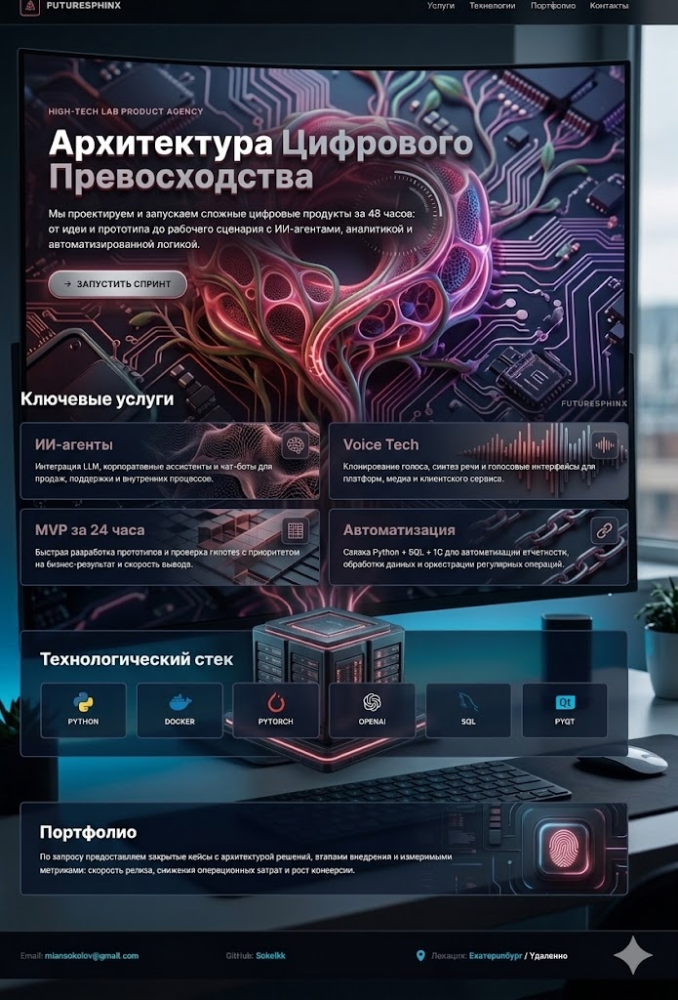

ИИ-агенты
Интеграция кастомных LLM
Разработка автономных агентов на базе GPT-4o и Claude 3.5. Автоматизация техподдержки, холодного поиска и глубокой аналитики данных без участия человека.

High-Tech Lab Product Agency
Проектирую и запускаю сложные цифровые продукты за 48 часов: от идеи и прототипа до рабочего сценария с ИИ-агентами, аналитикой и автоматизированной логикой.
Интеграция кастомных LLM
Разработка автономных агентов на базе GPT-4o и Claude 3.5. Автоматизация техподдержки, холодного поиска и глубокой аналитики данных без участия человека.
Синтез и клонирование
Создание цифровых двойников голоса с сохранением интонаций. Интеграция в IVR-системы и создание контента для YouTube и TikTok со студийным качеством.
Молниеносный запуск
Проверка гипотезы в реальном бою. От проектирования архитектуры до деплоя работающего веб-сервиса на Vercel или Docker за два рабочих дня.
High-End эстетика
Проектирование сложных интерфейсов с акцентом на микровзаимодействия. Визуальный стиль уровня топовых мировых дизайн-студий.
Next.js и Tailwind
Высокопроизводительные приложения. Чистый код, SEO-оптимизация из коробки и идеальная работа на любых устройствах.
iOS и Android
Кроссплатформенные решения на Flutter и React Native. Интеграция биометрии, пуш-уведомлений и встроенных ИИ-функций.
Почему стоит работать со мной?
 PyQt
PyQtИ это только малая часть экосистемы: подключаю и многие другие технологии под задачу, масштаб и бюджет проекта.
По запросу предоставляю закрытые кейсы с архитектурой решений, этапами внедрения и измеримыми метриками: скорость релиза, снижение операционных затрат и рост конверсии.